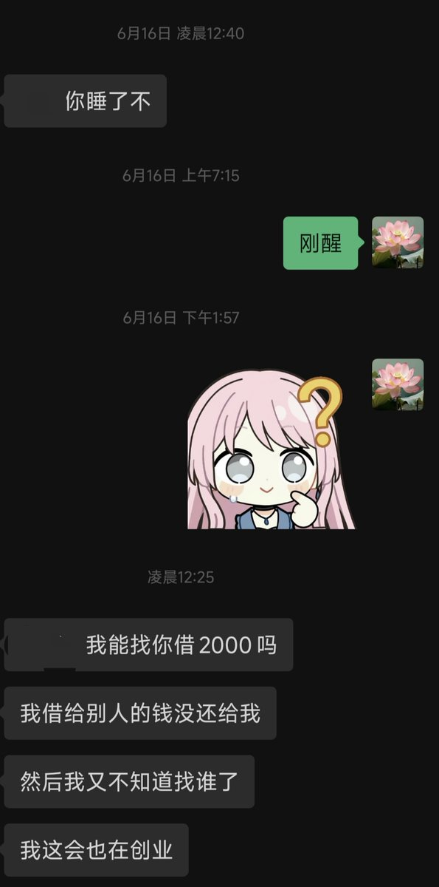
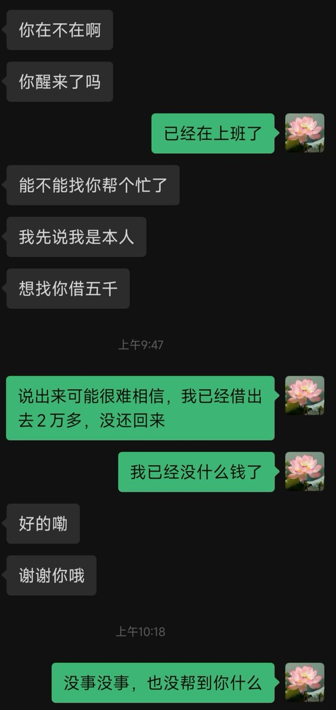

我不明白。5月找我借5千，现在又找我借2千，我一个朋友圈都不发的人怎么看出我有钱的。五年都没怎么联系怎么好意思这样找我借钱。我还记得那年考完最后一科我们还是一起顺路回家的，最后告别的时候还互相祝福了一下。真的要毁掉我对你的好印象吗？说得好听一点就是高中关系还不错的同学，说得难听的话我现在真的跟你很熟吗？这五年基本就是跨年的时候互相祝福一下吧，而且每次都是我主动发的。



已经快五年没怎么联系了，虽然我知道几乎所有人一找我联系就是要我帮忙或者借钱，但是我真的不愿意相信你也会这样。能不能不要毁掉你在我心里的形象，我真的不想讨厌你。 https://t.co/ZICjkZAoDr